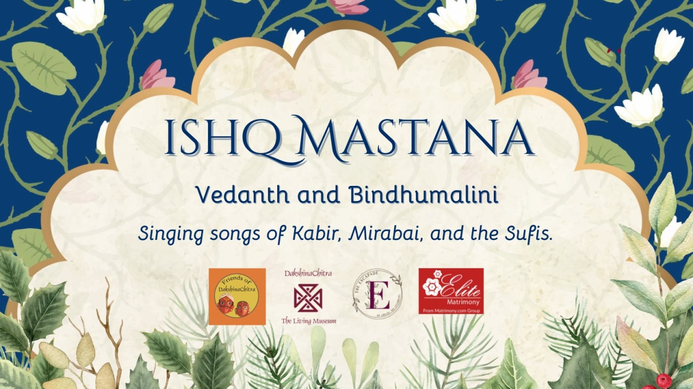

Ishq Mastana: A Concert
Celebrating Love
Music, Performances
Sat, 14 Feb, 6:00 PM
DakshinaChitra Heritage Museum, Tamil Nadu
₹800
Ishq Mastana is a soulful concert by Bindhumalini and Vedanth Bharadwaj that celebrates love and
devotion through Bhakti and Sufi musical traditions. Drawing from the poetry of mystic saints like
Mirabai, Kabir, Bulleh Shah, and Amir Khusro, the performance explores love in all its forms—longing,
surrender, ecstasy, and divine union. Blending classical, folk, and contemporary styles, the concert
creates an intimate, meditative experience that transcends time and boundaries. Audiences are invited
to stay afterward for informal conversations, food, and connection, making *Ishq Mastana* a shared,
reflective cultural experience rather than just a concert.
Language : Kannada, Hindi
Duration : 1 hrs 30 mins
Tickets Needed For All ages
DakshinaChitra Heritage Museum
R6FR+4M4 DakshinaChitra Heritage Museum, SH 49, Muthukadu, Tamil Nadu 603112,
India